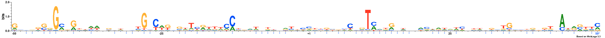
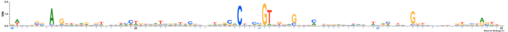
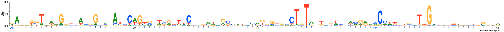
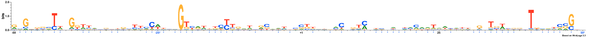
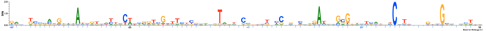
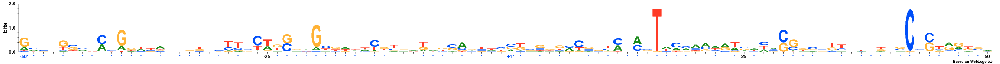
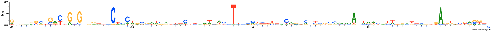

MODEL
Lambda: 1.0
Dataset structure: 1000 sequences with 100 features
Number of architectures in the best model: 10
Likelihood of best model: -118353.389987
Architecture 1: 125 sequences with 51 important features
Sequence logo for the important positions in architecture 1

Architecture 2: 148 sequences with 50 important features
Sequence logo for the important positions in architecture 2

Architecture 3: 48 sequences with 59 important features
Sequence logo for the important positions in architecture 3

Architecture 4: 33 sequences with 56 important features
Sequence logo for the important positions in architecture 4
Architecture 5: 64 sequences with 62 important features
Sequence logo for the important positions in architecture 5
Architecture 6: 59 sequences with 57 important features
Sequence logo for the important positions in architecture 6

Architecture 7: 105 sequences with 57 important features
Sequence logo for the important positions in architecture 7

Architecture 8: 259 sequences with 50 important features
Sequence logo for the important positions in architecture 8

Architecture 9: 95 sequences with 52 important features
Sequence logo for the important positions in architecture 9

Architecture 10: 64 sequences with 59 important features
Sequence logo for the important positions in architecture 10

Logo for the raw data

NOTE: All important positions in the logos are followed by an asterisk symbol and are coloured blue